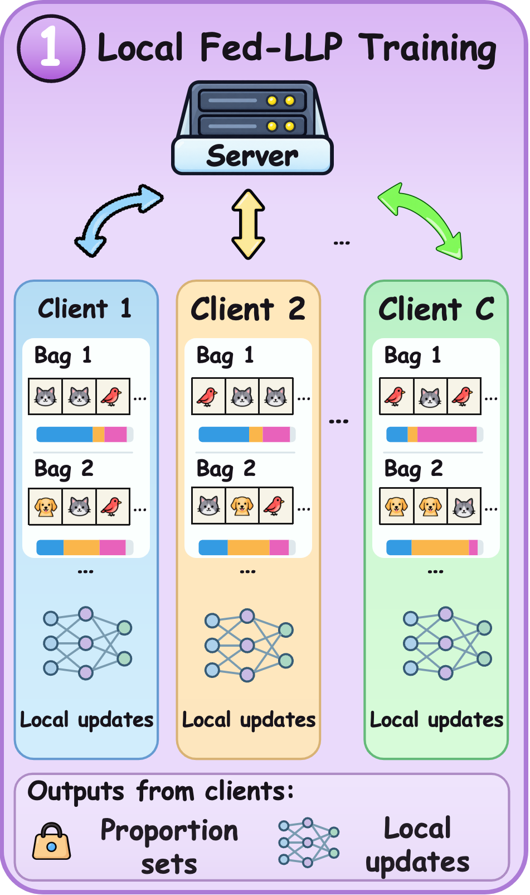

A suitable collaboration context.
Compare sets of bag proportions to select compatible clients and establish a sample-count-aware aggregation base.
A hierarchical collaboration framework for federated learning
from label proportions.
Local bags provide aggregate supervision. Effective collaboration must account for both compatible bag-proportion structures and reliable coverage of target-scarce classes.
Compare sets of bag proportions to select compatible clients and establish a sample-count-aware aggregation base.
Combine target-relative coverage with source-local proportion consistency. Greater coverage alone does not establish reliability.
Local proportion-supervised learning establishes the client models. Compatibility organizes collaboration; class-wise evidence refines the classifier.

Compatibility uses a symmetric nearest-neighbor Jensen–Shannon discrepancy between bag-proportion sets. The top H non-self clients form the collaborator set. Base weights account for compatibility and sample count. Complementarity combines target-relative class coverage with source-local bag-proportion consistency. Refined weights affect classifier rows and biases; non-classifier parameters retain the base aggregation. Reliability is recomputed after local training in every communication round. It is a proportion-consistency proxy, not an estimate of instance-level class accuracy. Client-specific training states are consolidated into a sample-weighted global model.
Four datasets. Three heterogeneity settings. The complete comparison from Table 1 of the supplied manuscript draft.
settings with the best accuracy
image classification benchmarks
comparison methods
Selected setting · exact values are listed in the table below.
| Method | β = 0.25 | β = 0.50 | β = 0.75 |
|---|
Source: manuscript Table 1. Values are reported in the paper; this page does not report new experiments.
Reported sensitivity analysis across four datasets. The first four plots reproduce manuscript Figure 2 under β = 0.25; the bag-size plot adds a complementary view.
Communication rounds and number of clients.
The number of selected clients in the compatibility stage.
The strength of class-wise classifier refinement.
The amount of aggregate supervision within each bag.
Source: manuscript Figure 2 (rounds, clients, H, η) and the reported bag-size plot. Images retain the original axes, legends, and values; no experiments were rerun.
A minimal reference implementation of the FedC² core: collaboration, complementarity, classifier refinement, the DLLP objective, and a synthetic example.
python examples/minimal_fedc2.pyRead the formulation, theoretical analysis, and experimental comparisons in the manuscript.
A manuscript link will be added when the paper is publicly available.
Manuscript forthcomingRelease scope: core reference implementation. The current package does not include the complete data preparation, federated training, or evaluation pipeline needed to reproduce all reported results.